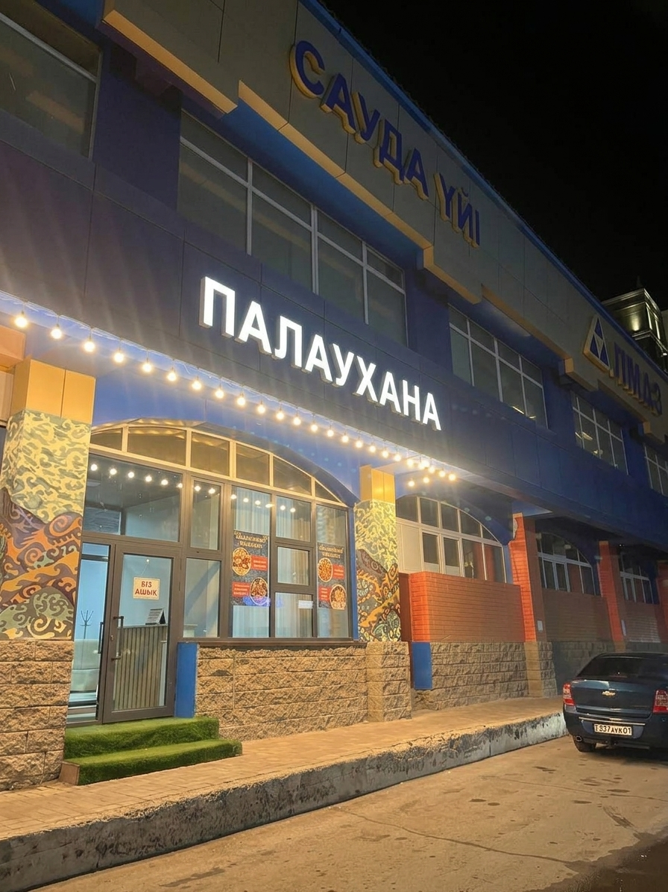

Бас Аспаздың Кеңесі
«Палау — бұл жай ғана тамақ емес, бұл үлкен отбасы мен достардың басын қосатын берекелі дастарқан.»
Шеф-аспаз: Әлішер Атабаев (15 Тамыз 2026 ж.)
Қарағанды қаласының Юго Восток ауданында орналасқан «Палаухана» — ұлттық дәмді сүйетін қонақтар үшін арнайы ашылған мекен. Біз күн сайын таңғы уақыттан бастап балғын ет пен ең сапалы күріштен дайындалған палауы.
Біздің мекемеде жайлы атмосфера мен жоғары қызмет көрсету сақталған. Қызмет сапасы жоғары деңгейде ұсынылады
«Палау — бұл жай ғана тамақ емес, бұл үлкен отбасы мен достардың басын қосатын берекелі дастарқан.»
Шеф-аспаз: Әлішер Атабаев (15 Тамыз 2026 ж.)
